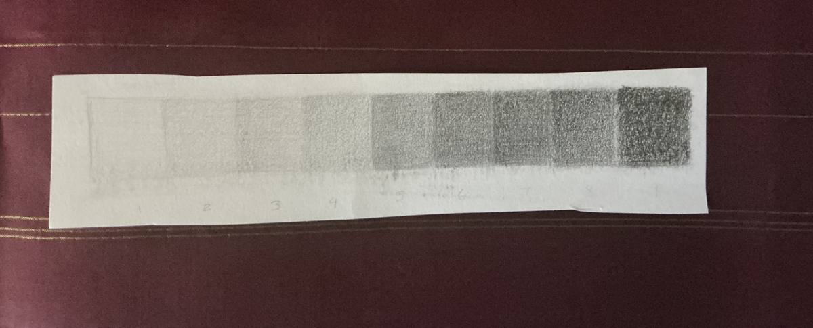
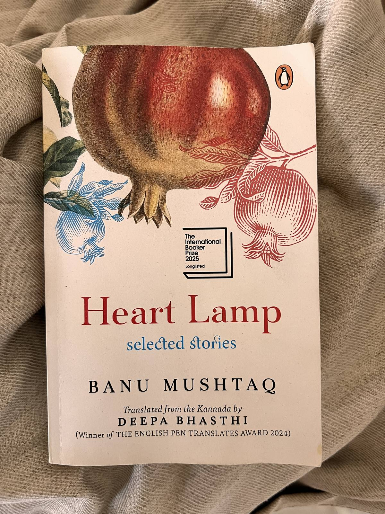
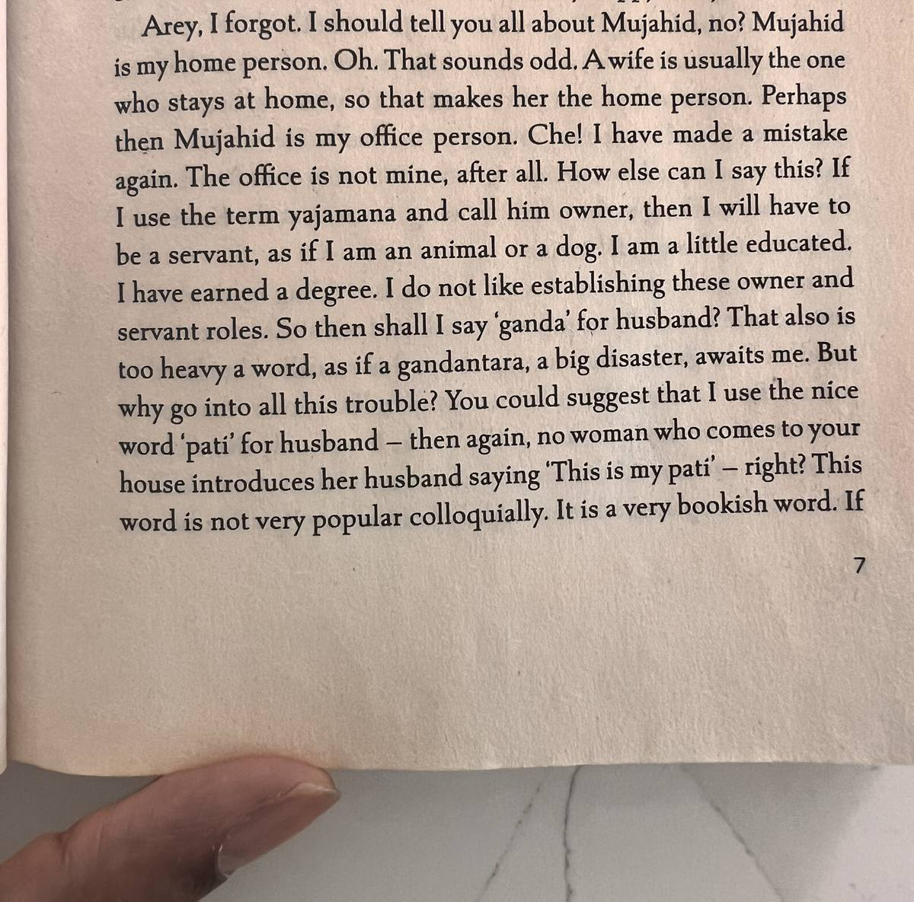
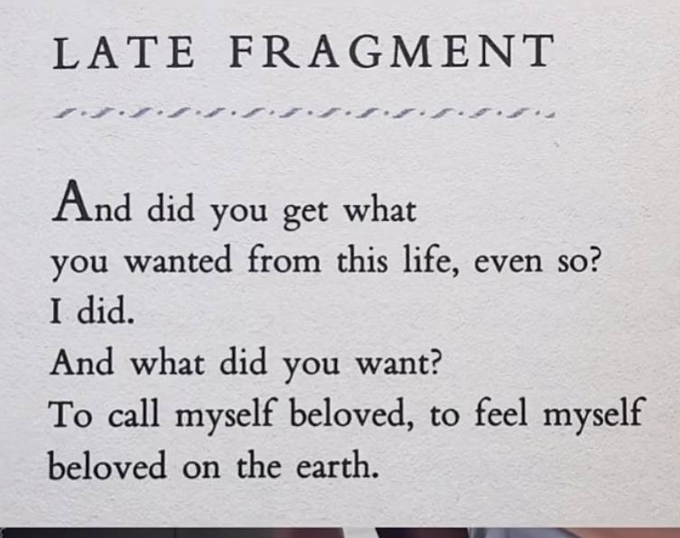

It's a near-total eclipse today- one of those once in a century things that seem to happen every 5 years. Or is that just how it seems to us millennials who have seen more than our fair share of once in a century events in the four decades we have been on this planet?
In theme with the eclipse vibes - darkness/light, yin/yang - here are a few snippets from various recent writing about pain, illness and staying sane in the face of it.
When I was younger I used to think that you had to struggle and be unhappy to create art. Art comes from pain, I thought. All the songs about heartbreak are proof right?
In a way I ran away from a creative life, because I didn't want to doom myself to relying on a life of suffering and unhappiness.
But now I know, art is what we make despite pain. Not what we make because of it.
How do I know this? I started singing around the house at some point last year, a few weeks after I had started a new migraine treatment. And until I did it, the silly singing, I hadn't realized that I had ever stopped doing it.
I feel like I've lost my handle on July and August. It has wriggled out of my grasp like an over eager hose pipe - the force of the water getting water everywhere but where I intended.
I've had a long flare up this past month. And I'm trying to stay calm about it - sticking with my current care plan and not frantically trying 10 new remedies. The resentment though is harder to contain. This thing steals my time, my plans, the pleasure I take in things and worst of all my sense of who I am. Some rage and resentment seems warranted.
That's what happens with chronic illness. The days are long and exhausting. And yet months and years slip by. A waking Rip Van Winkle situation- a blink and you realize time has passed you by. Your body and your world unrecognizable.
The pain makes you live in the short term - a strange type of mindfulness I suppose. And while acceptance of that pain can happen in the now, recovery happens over weeks, months and years. Setbacks are guaranteed.
But if I zoom out far enough, I'm making progress - bumping and knocking my way through the flotsam and jetsam of a lazy, temperamental river. I'll hold on to that thought for today.

I spent 2 hours in an art class just practicing holding the pencil differently and learning to shade. Pretty cool how much learning different crafts is about training the body as much as much as the mind.
Made a pinhole camera for the eclipse - it's obviously not as clear as having the glasses but a pretty cool experience.

Have only just read the first story and it was incredible but such a gut punch. You know you're reading really good short stories when you can't believe it's over because it was so vivid and immersive - like the whiplash of a sudden summer storm. The translation is fantastic - bringing in the colloquialisms and specific voice of these Muslim South Indian characters perfectly.


Love this poem by Raymond Carver